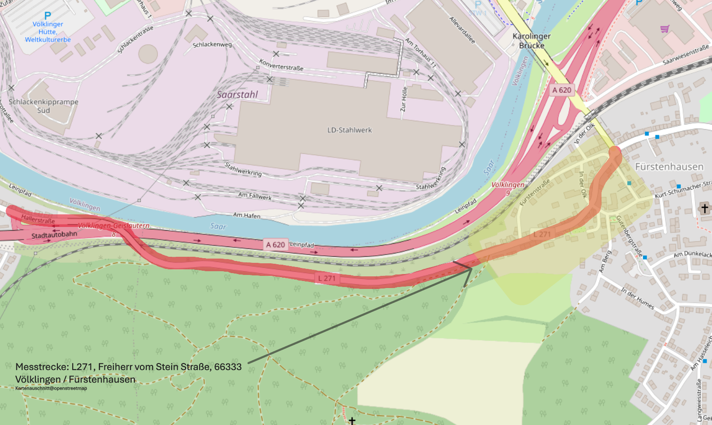

Dashboard
Luftqualitätsgrenzwerte
PM2.5 EU Grenzwert: 25 µg/m³
PM10 WHO Empfehlung: 15 µg/m³
PM10 EU Grenzwert: 45 µg/m³
Aktuell:
PM2.5: --
PM10: --
Lärmgrenzwerte
Grenzwert Neubau: 59 dB
Kritische Belastung: 65 dB
Lärmsanierung Bestand: 67 dB
Gesundheitskritisch: 70 dB
Aktueller Durchschnitt: --
Verkehr Verlauf (Autos / Stunde)
7-Tage Übersicht
Autos täglich
Lärm Verlauf (dB)
Peak Verlauf (dB)
Lärm Heatmap (24h × 7 Tage)
Zeigt die durchschnittliche Lärmbelastung pro Stunde und Tag ( seit 22.04.2026 )
Heatmap EU Lden
Diese Heatmap zeigt den nach EU-Richtlinie berechneten Lärmindex
Lden (Day-Evening-Night Level).
Berechnung nach EU-Umgebungslärmrichtlinie:
• Tag (06–18 Uhr): normaler Pegel
• Abend (18–22 Uhr): +5 dB Zuschlag
• Nacht (22–06 Uhr): +10 dB Zuschlag
Dadurch wird der stärkere Einfluss von Abend- und Nachtlärm
auf Gesundheit und Schlaf berücksichtigt.
Luftqualität
Feinstaubmessung
Diese Seite zeigt die gemessene Feinstaubbelastung an der Messstation entlang der L271 in Völklingen. Feinstaub entsteht hauptsächlich durch: • Straßenverkehr (Reifen- und Bremsabrieb)• Verbrennungsmotoren (Dieselpartikel)
• Industrie und Heizungen
• Baustellenstaub
• natürliche Quellen wie Saharastaub
PM2.5
PM2.5 bezeichnet sehr kleine Feinstaubpartikel mit einem Durchmesser von weniger als 2,5 Mikrometern. Diese Partikel können tief in die Lunge eindringen und gelten als besonders gesundheitsschädlich. WHO-Empfehlung: 5 µg/m³PM10
PM10 beschreibt Feinstaubpartikel mit einem Durchmesser unter 10 Mikrometern. Sie entstehen häufig durch Straßenstaub, Reifenabrieb und Bauarbeiten. EU-Grenzwert (Tagesmittel): 45 µg/m³EU Luftqualitätsindex (AQI)
Der EU-AQI fasst verschiedene Schadstoffe zu einer verständlichen Bewertung zusammen. Bewertungsskala: • 0-20 → sehr gute Luftqualität• 21-40 → gute Luftqualität
• 41-60 → mäßige Luftqualität
• 61-80 → schlechte Luftqualität
• 81-100 → sehr schlechte Luftqualität
Der Index basiert hauptsächlich auf den gemessenen Feinstaubwerten.
Die dargestellten Werte stammen aus einer privaten Umweltmessstation und dienen ausschließlich der allgemeinen Information.
Feinstaub Heatmap (24h × 7 Tage)
Diese Heatmap zeigt die durchschnittliche Feinstaubbelastung (PM10) pro Stunde und Wochentag.
L271 Verkehrsanalyse
Auswertung der Verkehrs- und Lärmbelastung auf der L271 in Völklingen
📊 Durchschnittswerte (7 Tage)
🔴 Grenzwertüberschreitungen
- >53 dB (WHO) --
- >59 dB (Neubau) --
- >65 dB (kritisch) --
- >70 dB (gesundheitskritisch) --
⏰ Spitzenzeiten
- Lauteste Stunde --
- Höchster Peak --
- Verkehrsreichste Stunde --
- Max. Fahrzeuge/h --
🌙 Tag/Nacht Vergleich
- Ø Lärm Tag (6-22h) --
- Ø Lärm Nacht (22-6h) --
- Ø Verkehr Tag --
- Ø Verkehr Nacht --
📋 Bewertung
📈 Trend
- Lärm-Trend --
- Verkehr-Trend --
Umweltanalyse
Zusammenhang zwischen Verkehr, Lärm und Luftverschmutzung auf der L271
🚗 Verkehr → Lärm
🚗 Verkehr → PM10
🚗 Verkehr → PM2.5
📊 Interpretation
🌫 Feinstaub-Ursache heute
🌼 Pollen: -- %
🌍 Hintergrund: -- %
Daten Export
Exportiere die gesammelten Verkehrs- und Lärmdaten
Datenvorschau
-- Datensätze verfügbar
Zeitraum: --
Messstrecke

Disclaimer
Projektbeschreibung
Diese Website ist Teil eines privaten, nicht kommerziellen Umweltprojekts zur Beobachtung der allgemeinen Verkehrs- und Lärmsituation im Umfeld der Landesstraße L271 in Völklingen.Ziel dieses Projekts ist es, langfristige Veränderungen der lokalen Geräuschumgebung sichtbar zu machen und statistisch auszuwerten. Die dargestellten Informationen dienen ausschließlich der allgemeinen Information sowie der technischen Analyse von Umweltgeräuschen.
Die Inhalte dieser Website stellen keine amtliche Messung dar und ersetzen keine offiziellen Verkehrszählungen oder Lärmuntersuchungen von Behörden oder Gutachtern.
Art der Messung
Die Messstation erfasst ausschließlich physikalische Umgebungsparameter in Form von Schalldruckpegeln (dB). Hierbei handelt es sich um rein technische Messwerte, die über einen elektronischen Schalldrucksensor ermittelt werden.Gemessen werden insbesondere:
• durchschnittliche Umgebungsgeräuschpegel
• zeitlich gemittelte Lärmwerte (z. B. 10-Minuten- und Stundenmittelwerte)
• kurzfristige Schalldruckspitzen
• daraus abgeleitete statistische Indikatoren zur Verkehrsdynamik
Die Messdaten werden automatisiert verarbeitet und in aggregierter Form dargestellt. Rohsignale oder Audioinformationen werden nicht gespeichert.
Keine Audioaufzeichnungen
Die Messstation dient ausschließlich der Bestimmung physikalischer Schalldruckwerte.Es werden keine Gespräche, Stimmen oder sonstigen akustischen Inhalte aufgezeichnet oder gespeichert. Der eingesetzte Sensor liefert ausschließlich numerische Messwerte des Schalldruckpegels.
Eine Rekonstruktion von Gesprächen oder anderen akustischen Inhalten ist technisch nicht möglich.
Keine personenbezogenen Daten
Diese Website verarbeitet keine personenbezogenen Daten im Sinne der Datenschutz-Grundverordnung (DSGVO).Insbesondere werden nicht erhoben oder verarbeitet:
• keine Gespräche
• keine Stimmen
• keine Personen
• keine Fahrzeugkennzeichen
• keine Bild- oder Videodaten
• keine Standortdaten von Personen
• keine biometrischen Informationen
Alle dargestellten Daten sind vollständig anonymisierte Umweltmesswerte.
Technische Funktionsweise
Die Messstation arbeitet mit einem elektronischen Schalldrucksensor. Die Daten werden lokal erfasst und über eine technische Datenschnittstelle (RS-485) an ein Auswertungssystem übertragen.Auf dieser Website werden ausschließlich bereits berechnete und statistisch zusammengefasste Messwerte dargestellt.
Einflussfaktoren auf Messwerte
Die dargestellten Werte sind Momentaufnahmen der lokalen Geräuschumgebung und können durch verschiedene Umweltfaktoren beeinflusst werden.Hierzu zählen unter anderem:
• Verkehrsaufkommen
• Fahrzeugtypen (z. B. Motorräder oder LKW)
• Witterungseinflüsse
• Windrichtung und Windgeschwindigkeit
• Bodenbeschaffenheit
• Reflexionen an Gebäuden oder Oberflächen
• temporäre Ereignisse (z. B. Baustellen oder Einsatzfahrzeuge)
Die Messergebnisse können daher von offiziellen Lärmmessungen oder Verkehrszählungen abweichen.
EU-Lärmindex Lden
Ein Teil der dargestellten Auswertungen basiert auf dem sogenannten Lden-Index.Der Lden-Wert (Day-Evening-Night Level) ist ein international gebräuchlicher Kennwert zur Beschreibung langfristiger Lärmbelastung und wird in der europäischen Umgebungslärmrichtlinie verwendet.
Der Index berücksichtigt unterschiedliche Tageszeiten mit Gewichtungsfaktoren:
Tag (06–18 Uhr): normaler Schalldruckpegel
Abend (18–22 Uhr): +5 dB Zuschlag
Nacht (22–06 Uhr): +10 dB Zuschlag
Diese Gewichtung berücksichtigt, dass Lärm am Abend und insbesondere in der Nacht stärker auf das menschliche Wohlbefinden wirkt.
Der resultierende Lden-Wert beschreibt somit eine energetisch gemittelte Gesamtlärmbelastung über einen 24-Stunden-Zeitraum.
Gesundheitliche Aspekte von Umweltlärm
Umweltlärm zählt laut Weltgesundheitsorganisation (WHO) zu den bedeutenden Umweltbelastungen in urbanen Regionen.Langfristige erhöhte Geräuschpegel können unter anderem folgende Auswirkungen haben:
• erhöhte Stressbelastung
• Beeinträchtigung der Schlafqualität
• Konzentrationsstörungen
• erhöhte Herz-Kreislauf-Belastung
Insbesondere nächtlicher Verkehrslärm wird in wissenschaftlichen Studien häufig mit gesundheitlichen Belastungen in Verbindung gebracht.
Die Darstellung der Messwerte auf dieser Website soll daher auch dazu beitragen, Umweltbedingungen transparenter zu machen und ein besseres Verständnis für die Dynamik von Verkehrslärm zu ermöglichen.
Hinweis zur Datenqualität
Die dargestellten Werte stammen aus einer privaten Messstation und stellen keine amtliche Messung dar.Abweichungen zu offiziellen Verkehrszählungen oder Lärmmessungen sind möglich.
Projektstatus
Die Messstation befindet sich in einem fortlaufenden technischen Entwicklungs- und Beobachtungsprozess.Algorithmen zur Auswertung der Daten sowie Darstellungsformen können im Laufe der Zeit angepasst oder verbessert werden.
Kontakt
Bei Fragen zum Projekt oder zu den dargestellten Daten kann der Betreiber per E-Mail kontaktiert werden.E-Mail: [traffic-monitorL271(at)outlook.de]
Datenschutzerklärung
1. Allgemeine Hinweise
Der Schutz personenbezogener Daten ist ein wichtiges Anliegen. Diese Website dient ausschließlich der Darstellung von Umweltmesswerten einer privaten Lärmmessstation. Es werden keine personenbezogenen Daten erhoben, verarbeitet oder gespeichert.2. Verantwortlicher
Verantwortlich für diese Website ist der Betreiber des privaten Projekts „Traffic Monitor L271“. Kontakt: E-Mail: [traffic-monitorL271@outlook.de]3. Art der verarbeiteten Daten
Die Website verarbeitet ausschließlich technische Umweltmesswerte einer privaten Messstation: • Schalldruckpegel (dB)• statistische Durchschnittswerte
• Lautstärkespitzen
• daraus abgeleitete Verkehrsindikatoren Diese Daten enthalten **keine personenbezogenen Informationen**.
4. Keine Audioaufzeichnungen
Der eingesetzte Sensor dient ausschließlich zur Messung des physikalischen Schalldruckpegels. Es werden keine Gespräche oder Audioinhalte aufgezeichnet oder gespeichert. Eine Rekonstruktion von Gesprächen ist technisch nicht möglich.5. Keine Video- oder Bildaufnahmen
Diese Website verwendet: • keine Kamera• keine Kennzeichenerkennung
• keine Gesichtserkennung
6. Server-Logfiles
Beim Aufruf der Website können technisch notwendige Server-Logfiles entstehen (z. B. IP-Adresse, Zeitpunkt des Zugriffs). Diese Daten werden ausschließlich zur technischen Bereitstellung der Website verwendet und nicht mit anderen Datenquellen zusammengeführt.7. Cookies
Diese Website verwendet **keine Cookies**.8. Tracking
Es werden **keine Analyse- oder Trackingdienste** (z.B. Google Analytics) eingesetzt.9. Rechtsgrundlage
Da keine personenbezogenen Daten verarbeitet werden, findet die DSGVO auf die dargestellten Umweltmesswerte keine Anwendung.10. Hinweis
Die dargestellten Werte stammen aus einer privaten Messstation und stellen keine amtlichen Messungen dar.Impressum
Betreiber
Privates ProjektTraffic Monitor L271
Völklingen, Deutschland